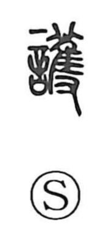

護

Kun: mamoru | On: go
to protect ・ to guard ・ safeguard
Explanation
護 combines 言, spoken words or prayers, with the sound element 蒦. 蒦 shows 雈, an eared owl, held in a hand, 又. The bird was used in divination.
The rite probably sought to avert calamity and keep the person safe. With the prayer added, 護 expresses the protection obtained or maintained through that act. It means to guard, shelter, or preserve someone from harm.
The word also emphasizes attentive watching: keeping a person or situation under careful observation so that danger can be met. Protection is therefore both warding off a threat and remaining watchful over what has been entrusted to one’s care.